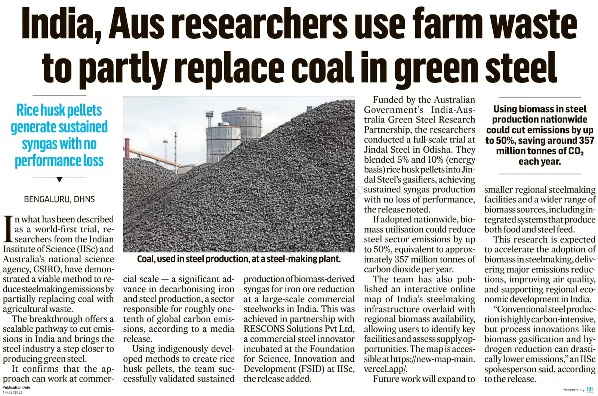
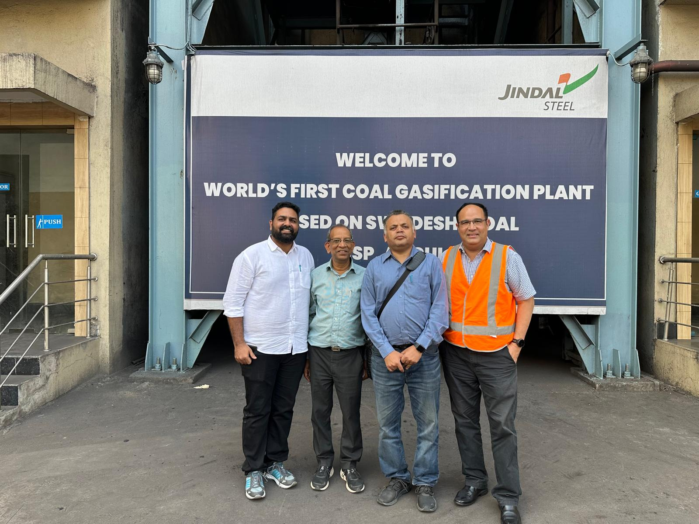
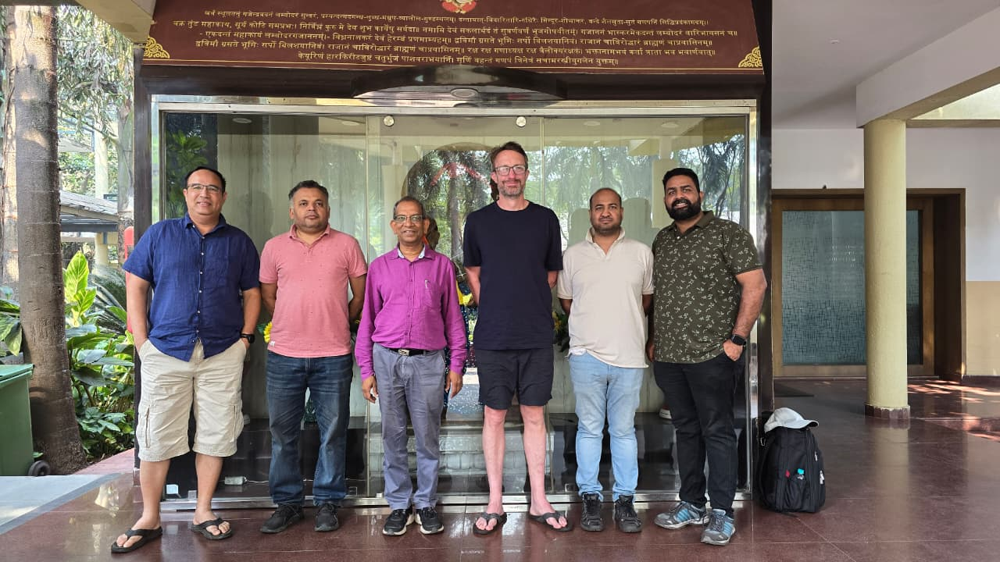
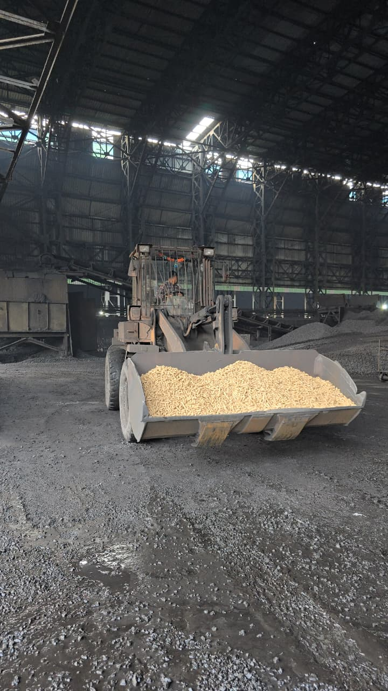
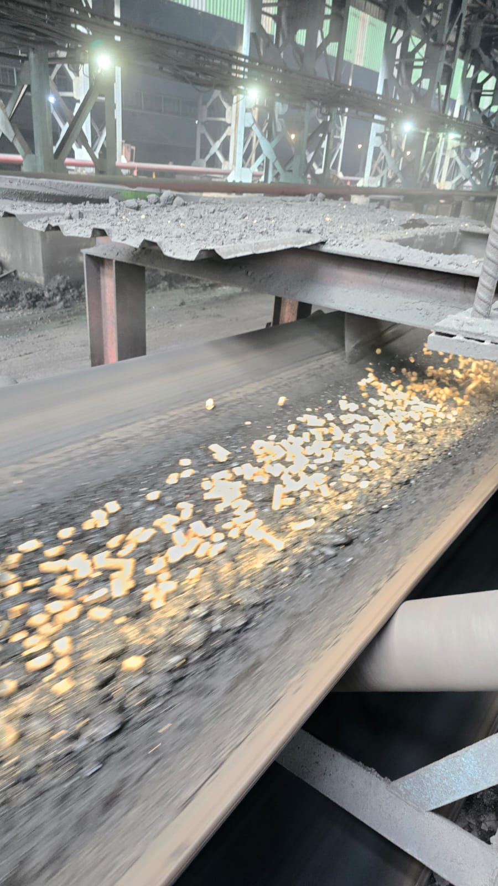

Replacing coal with agricultural waste in real-world steel production





The global steel industry is one of the largest contributors to carbon emissions, accounting for nearly 8% of global CO2 output.
For decades, steel production has relied heavily on coking coal as a reducing agent in blast furnaces and DRI processes, creating a massive carbon footprint that traditional methods struggle to offset.
Our breakthrough technology converts rice husk and other agricultural waste into high-quality syngas, directly replacing coal in the Direct Reduced Iron (DRI) process.
Agri-Residuals
Preprocessing
Syngas Generation
Clean Production
Potential to reduce carbon intensity of DRI steel by up to 30% through coal replacement.
Utilizing agricultural waste that would otherwise be burned in fields, reducing air pollution.
Successfully demonstrated at scale in partnership with leading steel producers like JSPL.
Collaborative efforts in climate-tech lead to breakthrough results at scale.
Read Full Article → UNI IndiaSignificant milestone achieved in the decarbonization journey of the steel industry.
Read Full Article → NewsXTransforming industrial processes through research and innovation.
Read Full Article → Sound TelegraphAn Australian-Indian venture proves that biomass can effectively replace coal.
Read Full Article → MSNInternational collaboration brings innovative solutions to traditional heavy industry.
Read Full Article → India Education DiaryBridging the gap between academic research and industrial application.
Read Full Article → APN NewsIndustrial-scale experiment demonstrates the feasibility of green steel technology.
Read Full Article → India Manufacturing ReviewLeading the manufacturing sector toward a more sustainable and efficient future.
Read Full Article → The Indian SunBreakthrough trial demonstrates the potential of biomass to replace coal in steelmaking.
Read Full Article →"At RESCONS Solutions, we believe in environmentally sustainable solutions that benefit present and future generations. Collaborating with CSIRO and IISc, we are proud to help pioneer the use of biomass in steelmaking, supporting India’s transition to greener industrial practices."
— Professor Govind S. Gupta, IISc Bangalore
Collaborate with us to build a more sustainable industrial landscape.
Partner With Us